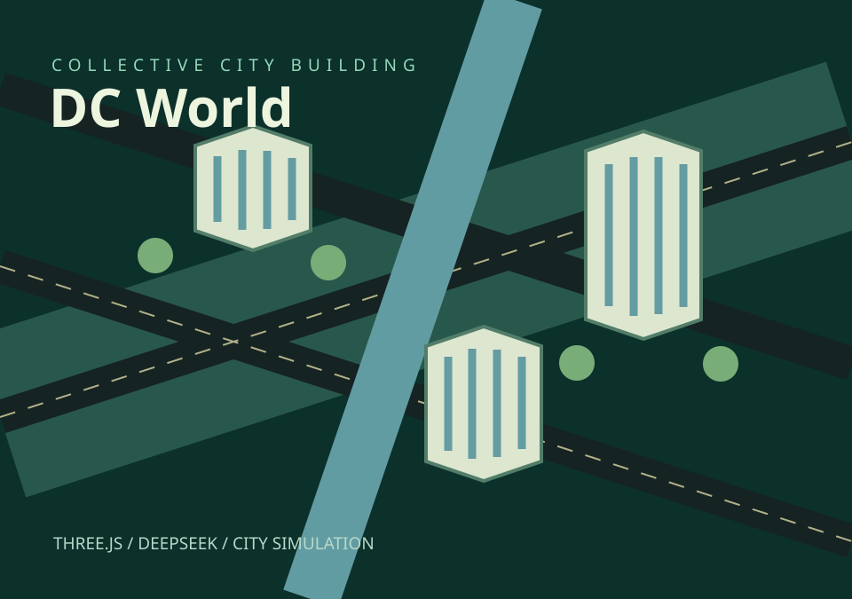

项目作品
09个项目

LIGHTING MARKET CONSOLE
Collect.
Compare.
WEB SHOWING
Outdoor
Lighting.


没有找到匹配的项目
试试其他关键词，或查看全部项目。
使用指南 项目访问与数据说明
开始浏览
- 按分类选择项目，或搜索名称与关键词。手机端点击搜索图标展开输入框。
- 点击项目按钮进入应用；展开「项目详情」查看完整介绍与访问说明。
- 右上角可以切换中英文和深浅色主题。语言切换会保留当前筛选与关键词。
各项目怎样使用
LumiPilot
使用原账号密码登录后，浏览新版情报操作台与已发布项目资料。界面以找人、找产品为重点，商机与方案位于右侧。线上保持只读；人物与产品实时采集、TED 研究和 LUMINA 本机操作需要完整服务。
登录后查看工作台使用指南 ↗照明市场工作台
使用账号和密码登录，选择市场和品类运行样例采集，可暂停、继续并查看日志；也可导入 CSV，在当前浏览器计算规格、筛选和对比商品，完成问卷后生成规则建议并导出 CSV / Markdown。演示不执行实时采集或调用 DeepSeek。访问域名已调整，原域名保存的导入记录不会自动迁移，可先导出后再导入。
登录照明市场工作台 ↗Web Showing
浏览公司介绍、户外灯具和工程案例。从项目入口打开账号登录页，登录页在新标签页打开；可回到项目入口返回作品集。
前往账号登录入口 ↗LUMINA
手机从底部“案例”选择场景，使用“选品”查看目录与模型，“灯光”调整效果，“工具”进入生成和导出。DeepSeek 连接使用演示访问码。方案保存在当前浏览器；价格、模拟配光和概念结构需要进一步核对。
进入在线演示 ↗越语冒险
按课程学习词句，通过听音、选择和句子排序闯关，再用错题复习巩固。发音训练可查阅音标与发音规则，设备提供的越南语声音可能不同。
进入学习首页 ↗万朝逐鹿
选择朝代后进入单人练兵，学习建设、征兵与攻城操作。单人模式直接在浏览器运行；与朋友联机需要另行部署并配置服务器。
进入游戏与玩法指南 ↗PDF 转 CAD
导入 PDF 或包含 PDF 的 RAR / ZIP，选择矢量或扫描模式，按一条已知尺寸选取两个端点并校准后开始转换。结果可逐页下载，或按 DWG / DXF 分别打包。扫描件输出轮廓，需复核线条与尺寸。图纸仅在当前浏览器处理，不上传、不展示历史；刷新后清空当前任务，请先下载结果。
进入图纸工坊 ↗采衡
新增23项大宗材料/牌号关注清单，保太ADC12公开历史采集、来源失败保留，以及相对低位/上涨风险规则。输入用量、库存及交期可测算备料缺口；个人DeepSeek可按勾选牌号找报价、分析研报，AI提炼未核对时不触发自动备料。 行情研判：输入材料或牌号，让自己的DeepSeek制定检索词，主动搜索近30天公开研报与产业分析，读取正文后分列来源事实、作者预测、AI判断与带条件的采购动作。自有PDF/文字只作补充；查看引文、来源日期、分歧、资料缺口和实际工作记录，可导出TXT/JSON。检索失败、付费/登录资料、无法读取的PDF链接会保留失败提示，不用摘要替代正文。 “成本模型”和“材料行情监控”已分为两个独立入口；成本模型包含注塑成本与线材成本情景，材料行情监控包含价格走势、手动刷新和DeepSeek研报分析。 行情：进入“材料行情监控”，顶部点“手动刷新 · DeepSeek”，在展开的连接区填自己的Key、读取并选择模型，勾选本次发送说明后再次刷新。来源未更新时显示检查结果，不生成周末价格；结果仅存当前浏览器，发布快照不会自动改写。 进入“成本模型 → 注塑成本 → 智能核价 / 报价复核”。先在高级核算导入本机费率库，或复用已核对的费率模板。在粒子价格 / 历史案例按牌号录入实际元/kg报价、密度、税运和有效期；公开元/吨行情可带入参考草稿，但不能当作指定牌号采购价。反向复核：上传报价或粘贴原文，连接自己的DeepSeek、读取模型并确认发送，逐项核对草稿；补齐数量、周期、穴数与费用条件后比较模型区间。参数核价：填净重、周期、穴数和数量，选择机台/粒子记录，检查原料、加工、其它费用和加成明细。STEP方案：选12MB以内STEP/STP，在本机解析后明确选择实体及分型方向；确认密度、月需求、可分配小时，取得待核对周期/压力范围，生成1/2/4/8穴及已有吨位机台的初筛与测算。可带入某个穴数继续核价；设备尺寸、射胶量、模具投资与试模另行核实。报价资料限5份、总文字60,000字符，文字PDF每批最多5页；扫描PDF请先OCR，XLS另存XLSX。PNG/JPEG及图纸预览需选择账号可用的官方图片Flash模型。核对工艺可保存历史案例用于检索；AI估算不得直接作为实测案例。导出价格/案例库和核价明细备份；原始文件与未授权报价不上传GitHub；授权脱敏报价参考可在线共享，Key刷新清除。快速档案复用、批量核价和高级核算继续可用。 私有整理包在“粒子价格 / 历史案例 → 导入粒子 / 报价JSON”选择，按材料货号或名称检索，点“用于核价（带入牌号）”；报价参考可点“带入参数待核对”。导入参考保留未知日期、供应商和税运状态，须核对后使用。 28条用户授权的脱敏报价参考现已在线共享，移除客户、项目、料号、原文件名及自由文本，保留工艺和成本要素；内部粒子采购价仍由本机私有JSON导入。
打开采购工作台 ↗访问与数据说明
LUMINA 的方案与模拟设备记录、越语冒险的学习进度保存在当前浏览器。切换设备或清除浏览器数据后，原记录可能无法继续使用；需要保留方案时，先使用项目内提供的导出功能。
资料日期、来源和计算范围以项目内部记录为准。LumiPilot 的概念模型与待核验标记保留原义；LUMINA 的照度分析仅计算人工直接光。工程应用前，请核对输入与适用条件。